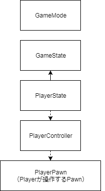
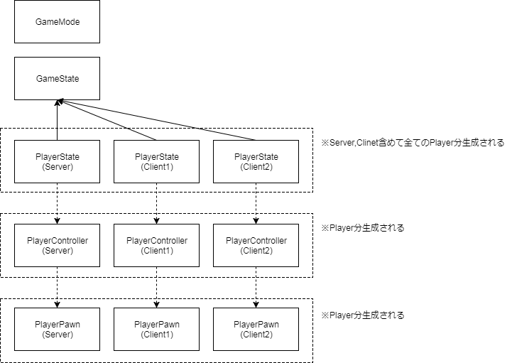
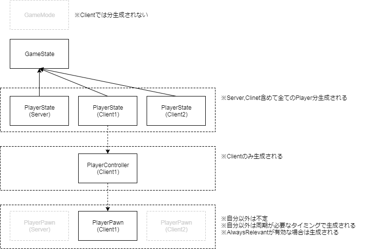
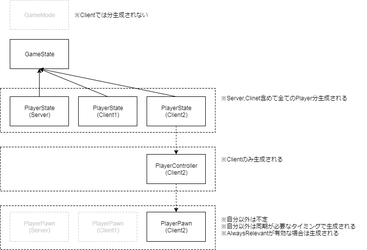

UE4中有对多人游戏模式的支持，本篇会记载一些与之相关的比较繁杂的知识点，一上来还是不可能就对所有的框架就能进行归纳总结的吧。
UE4框架总览
首先是对UE4的框架进行认知，UE4是以什么样的模式来定义多人游戏的。首先是官方文档的描述
即Server/Client的构成，我目前所知的就两种：
- Listen Server
- Dedicated Server
下面的这篇是关于多人游戏设计的文章，总结了很多重要的知识。
下面让我开始真正的UE4多人框架理解之旅。
Overview
首先是一些基础的概念，暂时还不需要对实现进行深究，但至少要知道。
首先是UE4中提供的几种网络模式和服务器类型。当然这些大多数是上面的官方文档的内容，我感觉用中文表达出来更方便我查找和回忆。
Network Modes and Sever Types
要以什么样的方式来开发，单人还是多人。在UE4的运行界面选定自己想要开始运行的网络模式。
| Network Mode | Description |
|---|---|
| Standalone | 就是以Server模式来运行，不接受任何来自别的客户端的连接 |
| Client | 就是以Client模式来运行，不会执行服务器端的任何逻辑代码 |
| Listen Server |
以Server模式来运行，也会接受来自其他客户端的网络连接(connections)而且存在一个本地玩家(Local Player) |
| Dedicated Server |
以Server模式来运行而且也会接受来自其他Client的连接，但是不存在本地玩家。所以这个模式下可以忽略画面，声音，用户输入，或者其他用户相关的特性，以此来提高Server的执行效率。这也是非常多的多人 游戏会采取的网络模式。 |
Actor Replication
Replication是我很早之前就接触到的名词，但是一直都很懵逼，不知道这个是干什么的。
Replication is the process of reproducing game state information between different machines in a network session.
Replication(复制)是网络同步的一个非常非常重要的过程。恰当且正确的设置Replication，可以实现不同机器之间游戏状态的同步。默认情况下，Actor的Replication功能是关闭的，也就是说仅会在本地执行，不会将现在的状态同步到其他机器。可以很方便的通过C++设置bReplicates = true或者在Blueprint中把Replicates设置为true。
关于一些常见的Replication特性，使用Actor的Replication可以做什么事情
| Replication Feature | Description |
|---|---|
| Creation and Destruction |
如果一个具有权威(Authority)版本的并且被标记为Replicate(=true)的Actor于Server生成(Spawn)，它就会自动的生成一个远程代理(remote proxies)用来同步所有与之相连的客户端的数据。如果你销毁了这个Actor，它也会销毁这些代理。 |
| Movement Replication |
如果Authoritative Actor的Replicate Movement 被激活(或者在C++中设置bReplicateMovement)，那么它的Location，Rotation，Velocity都会被同步。 |
| Variable Replication |
Authoritive Actor中的变量如果被标记为Replicated，那么当该变量值被修改的时候，也会通过远程代理将修改同步到其它远程上。 |
| Component Replication |
Actor的Components replicate同于其所属的的Actor，被标记为Replicated的变量同样会被复制，Component中的RPCs调用跟Actor类中的RPCs调用表现一致。 |
| Remote Procedure Calls(RPCs) |
RPCs是一种特殊的函数可以用来与特定的某个远程机器进行通信，不论是从哪一方调用。它可以被指定为Server(only runs on the server), Client(only runs on the Actor’s owning client), NetMulticast(runs on every machine conneted to the session, including the server)。 |
这里举几个反例，几个常见的特性在，Actor，Pawns，Characters中不需要replicate的：
- Skeletal Mesh and Static Mesh Components
- Materials
- Animation Blueprints
- Particle Systems
- Sound Emitters
- Physics Objects
Each of these runs separately on all clients. However, if the variables that drive these visual elements are replicated, it will ensure that all client has the same information and therefore simulates them in approximately the same way.
嘛，翻译过来总感觉不太对劲，大概就是那个意思。
Actor Replication的方式
关于Actor的Replication是一个很大的课题，知道UE4为Replication到底做到了哪一步很重要。官网中说
As mentioned in the networking overview, Actors are the main workhorse for replication. The server will maintain a list of actors, and will update the client periodically so that the client will maintain a close approximation of each actor (that is marked to be replicated).
这一段来自Actor Replication - The various aspects of replicating Actor objects and their components.
大意是说Actor是Replicate的主要的推动者，服务器会维护一个需要Replicate的Actor列表，定期的更新客户端数据，方便客户端维护这些Actor的值。
Actor的更新主要通过两种方式：
- Property updates
- RPCs (Remote Procedure Calls)
两者之间的区别在于属性更新当属性的值改变的时候自动Replicate，而RPCs只有在被执行的时候会Replicate。
这里官网中所说，自动进行属性值的更新并不代表完全没有任何代价，在判断属性值是否有被修改这个过程中还是存在着一点CPU的资源占用。取而代之的就是未修改的属性不会占用我们带宽(network bandwidth)。
关于各种Replication的具体使用，在上面的链接中有一些介绍，暂时先等用到的时候再逐一整理了。
Replicates NetLoadOnClient
在设置Actor的Replication的时候会遇到一些标志位，Replicates, NetLoadOnClient等等，它们之间有什么影响进行了验证。当然一开始我也是不知道的，于是问了公司的前辈，没想到前辈虽然不太清楚但是用非常详细的方式帮我验证了，这就是我跟强者之间的差距吗…
废话不多说直接上结论：
就初级功能而言，Replicates和NetLoadOnClient的效果是一样的，在Server中无论哪个被设置为true，Actor都会在各个客户端生成。
但是这也是仅针对初级功能而言：在游戏未运行的时候Server设置好，都会在Client中生成Actor，也就是说当你在UE4的Editor中把两个的任何一个设置为true，或者全部设置为true，都能观察到这个Actor在各个Client中都会被生成(以ListenServer模式运行)。当这两个都设置为false的时候，会发现这个只会在本地存在实例，不会被同步Spawn到其他远程上。
但是NetloadOnClient默认是true的，所以一般情况下没有必要特意的设置为false，除非是特殊情况只想生成本地实例。NetLoadOnClient貌似只是负责游戏最开始Play的时候是否要进行Actor的Creation Replication，还有最后游戏结束的Actor的Destruction Replication。
而Replicates则相当于更负责任的版本，除了Creation和Destruction的Replication之外，还会负责Variable的Replication。Actor的变量想要Replicate一定要把Replicates设置为true。
还有一种特殊的情况是当Actor的生成是动态的情况，也就是游戏运行的是Runtime生成Actor的时候，这两个变量对Replication的影响。结论就是：只有Replicates设置为true的时候，Actor会在各个Client生成远程版本，即Replication成功。
也就是说NetLoadOnClient对动态生成的Actor的Replication没有什么贡献。
那既然Replicates就足够用了，那我可以不可以手贱把Replicates设置为true，同时吧NetLoadOnClient设置为false呢？
答就是不要手贱，因为在Level.cpp中的Ulevel::InitializeNetworkActors()的处理中有这样的代码：1
2
3
4
5
6
7
8if(!bIsServer)
{
if(!Actor->bNetLoadOnClient)
{
Actor->Destory(true);
}
else
{
不是Server的时候这个Actor直接会被Destroy掉，但是由于Replicates设置为true，Server又会让该Client重新Spawn这个Actor，就没必要。
所以这两个标志位的情况应该是这样：
- NetLoadOnClient = true (default), Replicates = true
- NetLoadOnClient = true (default), Replicates = false (default)
- NetLoadOnClient = false , Replicates = false (default)
Network Role and Authority
一个拥有Authority权限的Actor决定了它是Network中的控制角色，控制Actor的状态(state)并且会将ReplicationInfomation同步到其它远程。远程代理(remote Proxy) 是在远程上的机器的复制，它会接收来自于Authority权限的Actor的ReplicationInformation用来同步自己的状态。
Local Role和Romote Role变量用来指定这些Actor的Role：
| Network Role | Description |
|---|---|
| None | 代表着Actor在这个网络中不拥有role，不会被复制(replicate) |
| Authority | Actor具有Authority权限，会复制(replicate)自己到其他的远程代理(remote proxy)上。 |
| Simulated Proxy | 是完全由另外一个远程上具有Authority权限的Actor复制的远程代理。Netwrok中大多数的Actor，像拾取物，子弹，可交互物体大多表现为远程客户端的SimulatedProxy角色。 |
| Autonomous Proxy | 这种Actor是一种可以执行自己本地功能的远程代理(remote proxy)，但是会收到其他远程的AuthorityActor的校正，这种角色一般是直接控制玩家的角色准备的。比如Pawn |
UE4的默认模式是server-authoritative，也就是服务器端拥有Authority权限，总是会从Server到Client这样replicate。
更多的Actor的network roles信息可以参照Actor Role and RemoteRole-The various aspects of replicating Actor objects.
Client Ownership
这里可以参照Owning Connection部分。
Relevance and Priority
Variable Replication
RepNotifies
Remote Procedure Calls (RPCs)
Reliability
Validation
Tips and Further Reading
Basic Replicated Actor Checklist
To create a replicated Actor, follow these steps:
Set the Actor’s Replicated setting to True.
If the replicated Actor needs to move, set Replicates Movement to True.
When you spawn or destroy a replicated Actor, ensure that you do it on the server.
Set any variables that must be shared between machines to replicate. This usually applies to gameplay-essential variables.
Use Unreal Engine’s pre-made Movement Components whenever possible, as they are already built for replication.
If you are using a server-authoritative model, make sure any new actions that the player can perform are triggered by Server functions.
Networking Tips
Use as few RPCs or replicated Blueprint functions as possible. If you can use a RepNotify instead, you should.
Use Multicast functions especially sparingly, as they create extra network traffic for each connected client in a session.
Server-only logic does not necessarily have to be contained in a server RPC if you can guarantee that a non-replicated function will only execute on the server.
Be cautious when binding Reliable RPCs to player input. Players can repeatedly press buttons very rapidly, and that will overflow the queue for Reliable RPCs. You should use some way of limiting how often players can activate these.
If your game calls an RPC or replicated function very often, such as on Tick, you should make it Unreliable.
Some functions can be recycled by calling them in response to gameplay logic, then calling them in response to a RepNotify to ensure that clients and servers have parallel execution.
You can check an Actor’s network role to see if it is ROLE_Authority or not. This is a useful method for filtering execution in functions that activate on both server and client.
You can check if a Pawn is locally controlled by using the IsLocallyControlled function in C++ or the Is Locally Controlled function in Blueprint. This is useful for filtering execution based on whether it is relevant to the owning client.
Avoid using IsLocallyControlled in constructor scripts, as it is possible for a Pawn not to have a Controller assigned during construction.
上面的英文内容是我直接复制粘贴过来的，有些是知识比较繁杂现在整理太费时间，就先做个标题，算是占位符了。
一些基础概念
关于理解UE4的多人框架的一些基础概念，由于不知道应该放在哪个部分好，就先放到这个里面，以后有更好的位置就再移动。
Owning Connection
上面链接来自于官网。可能会经常听到说Actor的owning Connection(我反正之前没怎么听说过），我也不知道该怎么翻译，所属连接?反正叫OwningConnection就对了，每一个connection都有一个PlayerController，或者说PlayerController的创建正是为了这个connection的。想知道一个Actor是否属于这个connection，那么就查询这个Actor的outer owner是否是PlayerController，而且这个PlayerController和这个connection所拥有的PlayerController是同一个，如果是同一个PlayerController那么这个Actor就属于这个connection。
Component在决定它的owning connection的时候有些特殊。它会向上遍历它的上级直到找到所属的Actor，然后像上面那样找到这个Actor的owning connection。这里原话是这样的我也不太确定自己理解的是否正确。
Components are a little special in how they determine their owning connection. In this case, we first determine the components owner by walking the components outer chain until we find the owning actor, and then we continue as above by determining owning connection of this actor.
理解OwningConnection对于一些功能非常重要：
RPCs需要知道并决定哪一个Client去执行run-on-clinet的命令，影响RPC Actor Repliation和connection relevancy * Actor property replication conditions等设定。
这对RPC非常重要，因为当你尝试对一个Actor调用一个RPC函数的时候，除非这个函数的多播(multicast)，它需要知道是哪个一个client去执行这一条RPC指令，它会通过找到自己的owningconention来借由这个connection来发送这条RPC指令。
ConnectionOwnership被用于Actor的Replication期间，决定了每个Actor所属的connection被更新。对于Actor来说，只有当bOnlyRelevantToOwner被设置为true的时候，connection才会为其所拥有的Actor接受属性更新( receive property update)。默认情况下，所有的PlayerController都设置了这个属性(bOnlyRelevantToOwner)，这就是为什么Client仅为他持有的PlayerController接收更新情报。这样做有很多原因，最主要的原因则是为了防止作弊和提高效率。
ConnectionOwnership对于property replication involving conditions也很重要，但是我现在还不是很理解这句话。
Connection ownership is important during property replication involving conditions that use the owner. For example. When COND_OnlyOwner is used, only the owners of that actor will receive these property updates.
关于上面的property replication involving conditions,官方文档的说明;
貌似是对Actor的属性(Properties)进行进一步的细节设置Replication。
最后，ConnectionOwnership对autonomous proxies的Actor(Role is ROLE_AutonomousProxy)很重要。对于这些Actor来说，如果它们的属性被Replicate到一个并不拥有这Actor的connect上的时候(这个connect并不拥有这些Actors)，它们就会被降格到ROLE_SimulatedProxy。
在进行详细说明之前，我想对已经大概理解的内容进行巩固和深入理解。
PlayerController
这个部分是以PlayerController开头却是想引出UE4的GameplayFramework的内容的。刚开始的时候总是会遇见一些名词，GameMode，GameState什么的，之前完全不是很理解这些内容。
在学习GameplayAbility的过程中又遇到了PlayerState这个东西，就觉得把这些很基础的内容串起来是很有必要的了。当然这些事情都有些好人帮我做了…
我就直接贴上链接了
关于官网上对于GameplayFramework的介绍：
我先把别人的劳动成果窃取过来，实在对不住。
GameMode
- 这个只存在于服务器(Server)上。
GameState
- 每个Machine都存在实例
- 拥有一个PlayerArray变量，是用来保存PlayerState的
- 没有Owner(GetOwner() == nullptr)
PlayerState
- 每台machine上，所有的Player都存在一个PlayerState
- Owner就是PlayerController (GetOwner()会返回PlayerController)
PlayerController
- 没有Owner (GetOwner() == nullptr)
- 持有玩家操作的Pawn (GetControlledPawn取得)
- OnPossess(Overridable native function for when this controller possesses a pawn)
Pawn
实际操作生成的PlayerPawn。
- PossessedBy中指定PlayerController
SinglePlay的情况

MultiPlay的情况



后面还有一些检验正确性的部分，输出LOG什么的，我就省略了。
Instigator
原意为”煽动者，始作俑者”，具体的我暂时还不是很清楚，是在Blueprint中遇到的：
从官网的介绍貌似是可以取得负责造成Damage的Pawn对象。Instigator
具体的使用情况不明…